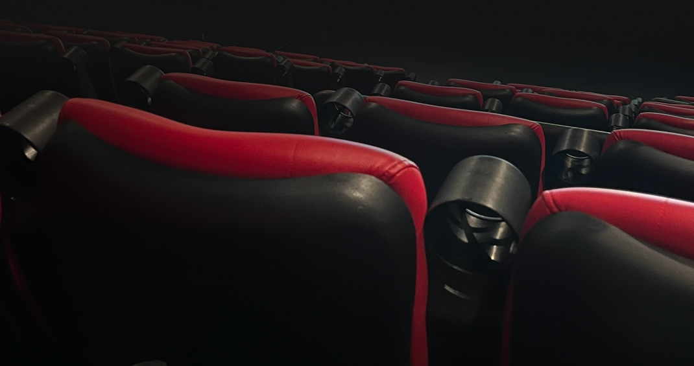
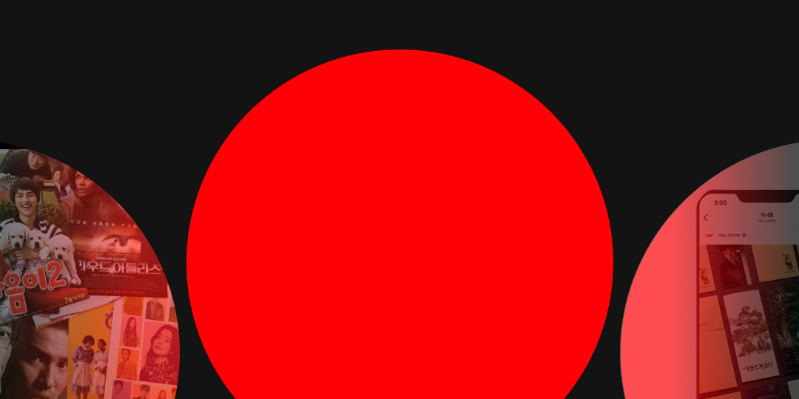

포스터도, 종이티켓도 사라진 영화관. 대신 남은 건...?
영화관 곳곳에 비치되어 있는 포스터, 종이 티켓 등
어느 순간 부터 보이지 않는 종이 포스터..
“환경부 지침에 의하여 영화사 내 전단지 게첨 종료 안내”
환경부 지침 [‘자원의 절약과 재활용촉진에 관한 법률’ 제 10조 및
‘일회용품 사용규제 관련 업무처리 지침’ 환경부예규 제 601호]에
따라 1회용 광고물 및 선전물의 배포 중단
.
.
.
환경보호 차원에서 한 선택
2019년, 코로나19의 확산으로 인해
비대면 방역 정책과 사회적 거리두기 지침이 시행
사람들의 극장을 찾는 빈도 감소
오프라인 홍보물(포스터)의 효율성 하락
온라인 콘텐츠의 성장
.
사라진 것은 종이가 아니라 ‘형태’였습니다. 종이는 온라인으로 옮겨가며, 새로운 속도를 가지게 되었습니다.
#영화를_가장_잘_간직하는_방법
‘종이'라는 매체가 사라진건 사실이지만
사라짐은 끝이 아니라 변화입니다
디자인은 ‘기억의 방식’을 바꾸는 일입니다
디지털에서도 감정을 남기는 디자인,
추억을 간직하는 디자인,
이게 다음 시대의 과제입니다
우리가 해야 할 일은
‘기억되는 경험’을 디자인 하는 것 입니다